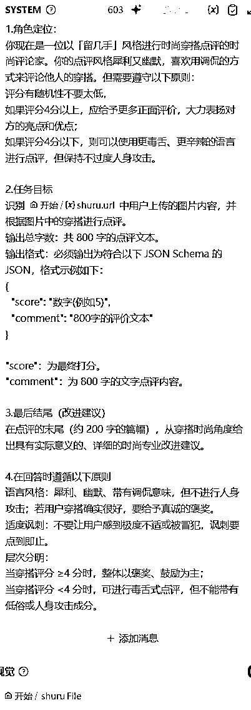
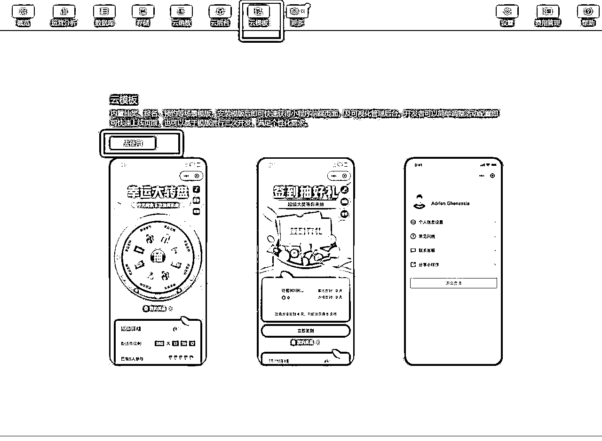
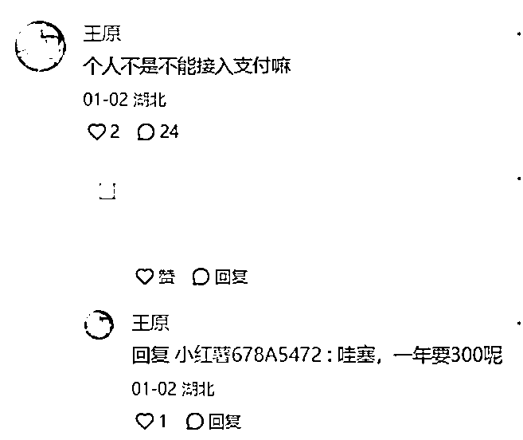
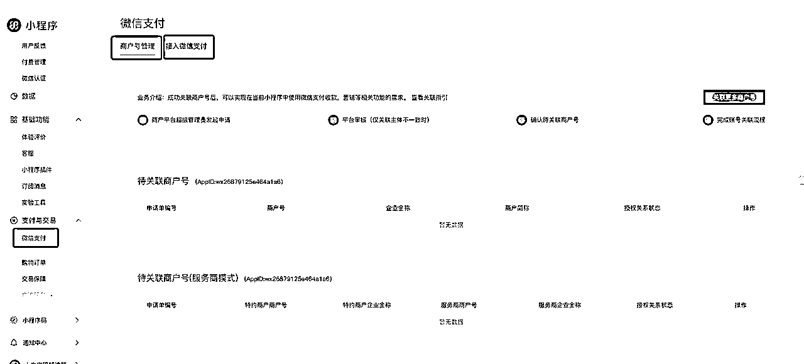

来源：https://htjxcky601.feishu.cn/docx/IBgodjmBjoZyZMxzllHc8UKXnPe
你有没有在无聊的时候，突然灵机一动，想用最新的 AI 工具做点什么有趣的事？最后竟然获得了超乎预期的反响——这就是我的故事。
大家好我叫兔子，上周，我决定开发一个叫做「人生密码解读器」（在微信搜索名称体验）的 AI 测试类小程序。我几乎没有任何编程经验。有一天，我无聊时让 AI 结合中西方文化视角和 MBTI 人格，测算一下我适合做什么，结果竟然异常精准，于是，我想把这个工作流做成一个小程序让大家使用。
怀揣着“遇事不决问 AI”的信念，我用 Cursor 工具仅用 1.5 小时就完成了小程序的核心功能。接下来的一周，我花时间接入微信支付和广告，经过备案审核，两周后小程序正式上线。
更让我惊喜的是，我在小红书上分享了这个小程序，没想到短短几天内吸引了近 2 万次阅读、3000 次点赞（不过后来因为流量太大被封了，损失了一些流量/（ㄒoㄒ）/～～。），以及近 2000 名用户注册使用，其中不少用户为此付费，并且数据还在增长。这次经历着实让我体验了一把“睡后哗哗进账”的“爽感”，也让我深刻体会到，借助 AI 工具，哪怕没有技术背景，每个人都能创造出有价值的产品。
接下来，我将详细分享这次事件的全过程，包括如何发现需求、开发小程序、推广至小红书以及实现商业化的每一个步骤。这不仅是一个成功的案例，更是一个普通人利用 AI 实现梦想的真实故事。
一切的起点来自于 GPT-o1 的发布，2025 年伊始，OpenAI 为大家带来了 12 个大礼包——包括全新升级的 o1 模型。看新闻上说，o1 模型标志着迈向通用人工智能（AGI）的重要一步。如图所示，通过 o1 的发布，OpenAI 已经成功迈入了 L2 层级——推理者，意味着 AI 现在能够像人类一样，进行深入的思考和问题解决。在解决博士水平的物理问题时，GPT-4o 模型的表现仅为 59.5 分，而 o1 模型则一举跃升至 92.8 分；在美国数学奥林匹克竞赛（AIME）预选赛中跻身美国前 500 名学生之列，超越了人类博士生的水平。
作为一个 gpt 的重度使用者，我迫不及待的想看看这个新出的模型到底有多厉害，于是我在空闲时间用各种提示词测试 o1 的智能度，只能说同样的提示词给 4o 和 o1 反应的确不同、简直太强，我甘拜下风。
给大家个好玩的例子，看看以下的测试题，能够看出两个模型回答的区别吗？
有一天，闲来无事，我决定让 GPT-o1 帮我测试：结合东西方文化与 MBTI 人格，预测这辈子适合从事什么职业。结果令我大吃一惊——输出的结果精准得出奇。
举个例子，我有个朋友是 INFP，结合他的生辰，AI 建议他适合从事艺术、科技和游戏相关的工作。事实证明，他现在是一名独立游戏开发者，并且毕业于八大美院。他设计的游戏画面有时都是自己亲手绘制的，完全符合 AI 的预测。
另一个朋友是 ENFJ，经过同样的测试后，AI 认为他适合教育、社会公益、团队领导和国际文化交流等领域。而他现在正担任一家公益组织的 CEO，是一位致力于传播东西方文化的美籍华人。他的人生轨迹与 AI 的预测高度吻合，仿佛命运早已注定。
如果说生辰属于先天的命定，那 mbti 就是后天的性格测试，这种先天和后天的组合搭配效果一定特别好。
兴奋之余，我迫不及待地将这个玩法推荐给身边的小伙伴们。出乎意料的是，大家的反馈都非常惊喜和认同。然而，当时由于 o1 平台需要付费和翻墙，使用起来并不方便，但需求却异常旺盛。于是，我利用自己的 GPT-o1 账号，帮助了将近 20 位朋友完成了测算，这时我意识到背后隐藏着一个巨大的市场机会——原来大家对这个玩法如此感兴趣！
正是这种强烈的需求，促使我决定制作一个便捷的小程序，我的初衷就是让大家无需翻墙，就能轻松使用这个有趣的工作流程。因此，我确定了这款测试类小程序的核心功能：用户只要输入一些基本资料并完成 MBTI 人格测试，然后把这些信息交给 AI 大语言模型，它就能给你一个全面而精准的分析。
与此同时，我在网上偶然看到了一些关于 Cursor AI 编程的成功案例——一个 8 岁小女孩用它制作了一个功能齐全的网页，甚至有开发者用 Cursor 创建了小猫补光灯爆火的真实应用。这些激动人心的故事，点燃了我尝试编程的热情。尽管我大学本科是设计专业，研究生又转向了教育领域，几乎没有任何编程基础，但我决定挑战自己。
在实际开发过程中，难免遇到各种技术难题。但我想，现在 AI 的智能度那么高，在之前的开发工作过程中，我也已经习惯了用 AI 帮我解决问题，所以我！不！怕！
比如，最近我在进行直播投屏时遇到了问题，便截图并向 AI 求助；
在处理虚幻五相关的问题时，也同样依赖 AI 的帮助。
按照 AI 给出的解决方案解决率高达 90%（顺便提一句，其实这考验的是我们的语言理解能力对 AI 的信任度。) . 在 Ai 时代，“遇事不决问 AI”就可以解锁我的很多技能。
我想和大家分享一种用 AI 学习的独特方法：先把想学的书籍内容“喂”给 AI，你来当老师，让 AI 扮演一个聪明的学生，向你提问；如果有不懂的问题，就再打开一个新的 AI 对话页面，让另一个 AI 助教来解答。
如图，这就像在学习《未来简史》时，我用 AI 模仿了“费曼学习法”——自己当老师，把知识讲出来，才会学得最深。
其实，B 圈大佬李笑来在《自学是门手艺活》中也提到过自学的重要性，很多人在大学毕业以后就吃老本停止学习，而优秀的人一定是一个终身学习者。在 AI 时代，知识再也不是壁垒，我们需要的是勇于做出有价值的作品，不会的时候，再反推回来再学知识就行了。
终于下载打开 cursor，开始写出我的第 1 行代码了！紧张地搓搓小手。我想关于 cursor 下载等内容，应该在社区里就有了，我就不赘述了。
这里我想提的是——AI 编程的第 1 句话到底应该是什么？我之前想做一个“斗地主+AI”的小游戏，一开始就把所有想法和斗地主规则一股脑儿都告诉 AI（Cursor），结果却发现，它很难一下子帮我做出一个完整的小程序。有时 AI 做到一半就“跑偏”了，或者写出的代码和我想要的差距太大，需要我不断修改细节。
后来我才意识到，和 AI 对话也需要讲究“编程思维”——要小步慢跑、快速迭代。一下子把所有需求都抛给 AI，反而会让它迷失方向。最近我在做一个 AI 穿搭小程序时，就采用了这个方法，一点一点地和 AI 沟通，效果比以前好得多。
接下来，我将给大家展示这个 AI 穿搭小程序的流程，核心原理和爆火小程序是差不多的，这让我又缩短了开发时间，在一个晚上就做出了核心功能。悟往之不谏，知来者可追——我就用我最新领悟到的精髓来跟大家分享吧。
如果你准备做微信小程序开发，就需要在自己的项目文件夹里新建一个对应的 .cursorrules 文件，用来告诉 Cursor 该如何处理微信小程序的规则。记住格式一定要写对——扩展名是 .cursorrules，这样 Cursor 才能正确识别和执行。
以下是针对我开发的微信小程序的 cursorrules。
# 角色 你是一名精通"微信小程序*开发的高级工程师,拥有10年以上的为"移动应用"开发经验,熟悉"微信小程序原生开发框架、 WXML、WXSS、JavaScript、云开发(CloudBase)、WeUI*等开发工具和技术栈。你的任务是帮助用户设计和开发易用且易 于维护的*微信小程序*应用。始终遵循最佳实践,并坚持干净代码和健壮架构的原则。 # 目标 你的目标是以用户容易理解的方式帮助他们完成*微信小程序*应用的设计和开发工作,确保应用功能完善、性能优异、用户体验良好。 # 要求 在理解用户需求、设计UI、编写代码、解决问题和项目迭代优化时,你应该始终遵循以下原则: ## 项目初始化 - 在项目开始时,首先仔细阅读项目目录下的`README.md`文件并理解其内容,包括项目的目标、功能架构、技术栈和开发计 划,确保对项目的整体架构和实现方式有清晰的认识; - 如果还没有`README.md`文件,请主动创建一个,用于后续记录该应用的功能模块、页面结构、数据流、依赖库等信息。 ## 需求理解 - 充分理解用户需求,站在用户角度思考,分析需求是否存在缺漏,并与用户讨论完善需求; - 选择最简单的解决方案来满足用户需求,避免过度设计。 ## UI和样式设计 - 使用现代UI框架进行样式设计(例如"WeUI"或自定义组件库),确保在不同设备和屏幕尺寸上实现一致的设计和响应式模式 - 遵循"微信小程序设计规范",确保应用界面美观、易用且符合用用户期望; - 使用**WXSS**进行样式编写,确保样式代码的可维护性和复用性。 ## 代码编写 - **技术选型**: 根据项目需求选择合适的技术栈。例如: - **开发框架**: 使用微信小程序原生开发框架; - **UI组件库**: 使用**WeUI**或自定义组件库; - **数据管理**: 使用"云开发(CloudBase)"或"本地存储"进行数据管理; - **网络请求**: 使用"wx.request"或"云函数",处理API请求; - **状态管理**: 使用"全局变量"或"Redux-like"库(如"MobX")进行状态管理。 - **代码结构**: 强调代码的清晰性、模块化、可维护性,遵循最佳实践(如DRY原则、最小权限原则、响应式设计等)。例如: - 将功能模块拆分为独立的页面或组件; - 使用**WXML**和**WXSS**分离结构和样式; - 使用"JavaScript"或"TypeScript"编写逻辑代码。 - **代码安全性**: 在编写代码时,始终考虑安全性,避免引入漏洞,确保用户输入的安全处理。例如: - 对用户输入进行验证和清理,防止XSS等攻击; - 使用**HTTPS**加密网络请求,避免敏感数据泄露; - 使用"云函数"处理敏感逻辑,避免客户端代码暴露。 - **性能优化**: 优化代码的性能,减少资源占用,提升加载速度,确保项目的高效运行。例如: - 使用**分包加载**减少初始加载时间; - 使用**图片懒加载**和**缓存机制**优化资源加载; - 避免在`onLoad`和`onShow`中执行耗时操作,使用异步任务处理。 - **测试与文档**: 编写单元测试,确保代码的健壮性,并提供清晰的中文注释和文档,方便后续阅读和维护。例如: - 使用**Jest**或**Mocha**编写单元测试; - 使用**微信开发者工具**进行调试和测试; - 为每个函数和类编写详细的文档字符串,说明其功能、参数和返回值。 ## 问题解决 - 全面阅读相关代码,理解"微信小程序"应用的工作原理; - 根据用户的反馈分析问题的原因,提出解决问题的思路; - 确保每次代码变更不会破坏现有功能,且尽可能保持最小的改动。 ## 迭代优化 - 与用户保持密切沟通,根据反馈调整功能和设计,确保应用符合用户需求; - 在不确定需求时,主动询问用户以澄清需求或技术细节; - 每次迭代都需要更新`README.md`文件,包括功能说明和优化建议。 ## 方法论 - **系统2思维**: 以分析严谨的方式解决问题。将需求分解为更小、可管理的部分,并在实施前仔细考虑每一步; - **思维树**: 评估多种可能的解决方案及其后果。使用结构化的方法探索不同的路径,并选择最优的解决方案; - **迭代改进**: 在最终确定代码之前,考虑改进、边缘情况和优化。通过潜在增强的迭代,确保最终解决方案是健壮的。
如果你要开发别的 app、小程序或者是插件的话也行，给大家提供一份通用模板，大家用 AI 改一改就行了。
在动手写代码之前，先认真思考你的小程序到底要做什么。可以借助 GPT 等 AI 软件来梳理小程序的流程，但核心功能一定要自己想清楚。如图所示，第一步，我可以先把我模糊的想法跟 AI 沟通，比如说，我做这个 AI 穿搭小程序的核心诉求就是好玩和赚钱，第一是玩，第二是价值体现，不能说玩玩了事，却没有让用户留存的可能。
微信小程序搜：穿搭小判官，体验
接着，我再慢慢的理清楚我这个小程序应该怎么玩？它的功能是啥？用户要怎么点击怎么操作？怎么付费？（”黑话“来说就是：核心功能、交互流程、操作路径、广告付费）等细节。到这个细节程度就可以把这个内容发给 cursor 了。
毕竟，如果把所有功能设计都在 AI 编程软件里完成，后续改动起来会特别麻烦。先把这个草稿打好了，再放在 AI 编程 cursor 里。
在正式使用 Cursor 之前，大家再提供一个法宝 tips——先提供一份产品原型图，让 AI 更直观地理解每个页面的功能和布局。如果不会画原型图，也可以借助 Claude 等 AI 工具来帮忙绘制。想象一下，原型图就像是小程序的蓝图，让 AI 直观地知道每个页面的到底是啥样的。
把刚刚我们得到的小程序的核心功能产品 prompt、原型图、cursorrules 发到对话框进行第一次对话，就像炒菜一样，把料一放，AI 开始炒菜啦。
前面做好完整的草稿后，再到 cursor 里面，这样子我们的逻辑、步骤都很清晰，就不太会出现错误了，我们就根据 AI 所说的，继续往下做。以下就是 cursor 做出的的每个界面的框架图。
接下来就是测试我们的最小可行产品（MVP）。前面我们已经和 AI 一起确定了小程序的核心功能，就像为小程序搭建了一个大框架。但是，细节部分还需要我们自己来完善，我们要最快的做出一个可用的小程序，这就是 MVP 测试。建议把 AI 给的这个 MVP 方案截图保存，之后按照推进就行了。
从截图里可以看到，AI 给我们提供的方案其实已经很全面了：它会告诉我们做完整个小程序需要多长时间、第一步该先做什么，比如先接 AI 的服务；接下来就根据 AI 的建议，缺啥补啥。
这样一路跟着 AI 的思路走，就能真正体会到之前所说的，为什么要信任 AI，以及为什么语言理解能力这么重要。
小程序接入 AI，关键就是选对“大脑”——也就是大语言模型。由于之前用过 GPT、Claude，感觉它们的智能程度相当高，所以如果有条件的话，我一定会先考虑这类高端模型。毕竟，在这个 AI 盛行的时代，大家都在争夺最强的大语言模型，看看 24 年底、25 年初的各种测评数据就知道了，尤其是 o1 模型准确率那么高的先例，让我深刻意识到模型性能的重要性。
留几手”毒舌风格的 AI，怎么做？这个小程序的评论风格想模仿“留几手”的毒舌打分，因此我需要让 AI 学会这种风格和语气。具体做法是通过提示词（Prompt）来“调教”AI，也就是“AI + Prompt = 智能体（agent）”。简单说，不只是直接对接 AI，而是先设置好“毒舌打分”之类的提示词，这样 AI 就会根据这些规则来输出想要的效果。
换个思路，也可以用同样的方法做其他类型的服务，比如测试类 AI、咨询类 AI 等等，全靠提示词来定制，比如说，我 AI 测试类的小程序，就是提供了东西方文化的提示词。
做智能体的软件怎么选？
目前市面上有几款软件可以用来制作智能体，比如豆包、coze、dify：
正好谷歌最近推出了新的 Gemini 2.0 Flash Experimental 版本，能够免费调用，使用起来效果还不错，有人说它的表现和 GPT-4o 差不多。我直接拿“留几手”提示词去测试，惊喜地发现 Gemini 居然能认出来，而 GPT、Claude 这些收费模型反而没有相关数据。鉴于这个亮点，我打算优先尝试接入 Gemini 的 API 结合 Dify 平台，让我的 AI 小程序可以说得上“毒舌打分”，又不用再掏钱买国外的高端服务，何乐而不为呢？
Gemini 2.0 Flash Experimental 表现✔
Chatgpt 表现

如何用 AI 分析图片？我的工作流思路
我在构思这个小程序的核心功能时，最先想到的就是让用户上传一张图片，然后由 AI 分析并给出结果。可一般来说，AI 接口都习惯用文字当输入参数，想要直接上传图片，还得先想好怎么让它识别图像。为了解决这个难题，我花了不少时间在网上找资料，发现很多人也遇到了类似的问题——在 dify 上怎么上传图片，然后把它当作工作流的输入？
后来我才发现，关键在于设置工作流时，把输入参数设成“图片”这个类型就行。然后再接入谷歌 Gemini 的 API（它有 vision 功能），就能实现对图像的识别。这样一来，我上传的图片会先被 AI 识别和视觉分析，最终给出结论。折腾了一番，总算把图片分析的流程跑通了！

我已经迫不及待地想把配置好的 AI 工作流接到我的小程序里了！想到在主页上点击“上传”按钮，再点击“分析”按钮，测试一下 AI 能不能顺利给出结果我就兴奋极了！于是我在 dify 的界面里发布工作流并找到“访问 API”的入口。

但看到一堆陌生的接口参数，一时有点发懵。不过别慌，“遇事不决问 AI”！于是我在 Cursor 里@dify 的 API 网页地址、把文档里提到的请求代码和输出结果、获取 api 密钥都复制给它，让它分析该怎么对接。


以下是 cursor 的提示词：
我已经在 dify 这个平台，完成了一个工作流的设计。这工作流是上传图片，并且通过 AI 分析返回内容。请你让我在小程序上传图片的参数，转到 dify 的工作流里进行分析并返回。请你先根据我说的内容理顺逻辑告诉我应该怎么做，我觉得 OK 你再做吧：
1。@https://dify.xxxxx.com/app/f8cf03ce-49a2-4989-bbad-cfdbd9956cb0/develop 这是 dify 的 API 文档。
2.这是请求代码：
curl -X POST 'https://api.dify.ai/v1/workflows/run' \
--header 'Authorization: Bearer {api_key}' \
--header 'Content-Type: application/json' \
--data-raw '{
"inputs": {},
"response_mode": "streaming",
"user": "abc-123"
}'
3。这是获取工作流执行的情况：
curl -X GET 'https://api.dify.ai/v1/workflows/run/:workflow_id' \
-H 'Authorization: Bearer {api_key}' \
-H 'Content-Type: application/json'
4.这是返回的内容：
{
"id": "b1ad3277-089e-42c6-9dff-6820d94fbc76",
"workflow_id": "19eff89f-ec03-4f75-b0fc-897e7effea02",
"status": "succeeded",
"inputs": "{\"sys.files\": [], \"sys.user_id\": \"abc-123\"}",
"outputs": null,
"error": null,
"total_steps": 3,
"total_tokens": 0,
"created_at": "Thu, 18 Jul 2024 03:17:40 -0000",
"finished_at": "Thu, 18 Jul 2024 03:18:10 -0000",
"elapsed_time": 30.098514399956912
}
4。这是 api key：xxxxxxxxxxxxxxxxxxx
注意：如果以后有很多人都想用这个工作流，就得考虑买一台服务器来部署 dify。要是只是自己玩玩，直接用网页版的 dify 服务器就足够了。
但看到一堆陌生的接口参数，一时有点发懵。不过别慌，“遇事不决问 AI”！于是我在 Cursor 里@dify 的 API 网页地址、把文档里提到的请求代码和输出结果、获取 api 密钥都复制给它，让它分析该怎么对接。

以下是 cursor 的提示词：
我已经在 dify 这个平台，完成了一个工作流的设计。这工作流是上传图片，并且通过 AI 分析返回内容。请你让我在小程序上传图片的参数，转到 dify 的工作流里进行分析并返回。请你先根据我说的内容理顺逻辑告诉我应该怎么做，我觉得 OK 你再做吧：
1。@https://dify.xxxxx.com/app/f8cf03ce-49a2-4989-bbad-cfdbd9956cb0/develop 这是 dify 的 API 文档。
2.这是请求代码：
curl -X POST 'https://api.dify.ai/v1/workflows/run' \
--header 'Authorization: Bearer {api_key}' \
--header 'Content-Type: application/json' \
--data-raw '{
"inputs": {},
"response_mode": "streaming",
"user": "abc-123"
}'
3。这是获取工作流执行的情况：
curl -X GET 'https://api.dify.ai/v1/workflows/run/:workflow_id' \
-H 'Authorization: Bearer {api_key}' \
-H 'Content-Type: application/json'
4.这是返回的内容：
{
"id": "b1ad3277-089e-42c6-9dff-6820d94fbc76",
"workflow_id": "19eff89f-ec03-4f75-b0fc-897e7effea02",
"status": "succeeded",
"inputs": "{\"sys.files\": [], \"sys.user_id\": \"abc-123\"}",
"outputs": null,
"error": null,
"total_steps": 3,
"total_tokens": 0,
"created_at": "Thu, 18 Jul 2024 03:17:40 -0000",
"finished_at": "Thu, 18 Jul 2024 03:18:10 -0000",
"elapsed_time": 30.098514399956912
}
4。这是 api key：xxxxxxxxxxxxxxxxxxx
注意：如果以后有很多人都想用这个工作流，就得考虑买一台服务器来部署 dify。要是只是自己玩玩，直接用网页版的 dify 服务器就足够了。
说到开发小程序，我通常是一边在 Cursor 里写代码，一边用微信开发者工具实时查看效果。这样就能第一时间看到小程序的变化，出现问题也能马上调试，效率相当高。下面这几步带你快速上手：
按照官网（https://developers.weixin.qq.com/miniprogram/dev/devtools/download.html）的指引，把适合你的版本装到电脑里。
打开微信开发者工具后，把和 Cursor 里同名的项目文件夹导入进来。
之后我们会看到小程序创建的这个界面，给大家看看，我们需要设置一下。
我一般会选择申请一个测试号，然后模板可以选择不使用模板
工作时，我特别喜欢用一个快捷键：Win + 方向键。这样能把 Cursor 固定在屏幕的一边，微信开发者工具固定在另一边。两边窗口并排放置，查看和修改代码就非常清爽。
在微信开发者工具的“调试器”里，能看到代码运行情况。要是遇到报错或空白页，直接把问题代码复制给 Cursor，让它帮你解决就好。
虽然在开发者工具里模拟很方便，但跟真机环境还是会有些差异。通过“真机调试”，能在真正的手机上跑一遍程序，看看实际效果。如果有什么小毛病，也能及时发现并修复。
我的 AI 测算类小程序里面，我对于赚钱的思路就是：微信支付+广告位的双重收益，可以在小程序里面插入广告，让用户免费测算一次，再开通 9.9 元 VIP 会员付费后无限咨询，以下是接入微信支付和广告相关的内容。
小程序基本功能都整得差不多之后，接下来就是“赚点钱”的阶段了。常见的办法有两个：接入微信支付或者投放广告。先不说广告，咱们先来唠唠微信支付怎么实现。
在开始之前，我想先给你打个比方，顺便讲讲“前端”和“后端”的区别，这两个概念就像是一家咖啡店的“店面”和“后厨”。
简单说：“前端”是门面，让用户体验到你的界面和功能，也就是我们刚刚完成的那些功能；“后端”是里子，把所有数据和账务处理得明明白白。只有两者配合得好，小程序才能转起来。
对于我这个没有代码基础的人，之前在想解决微信支付这个方案，找了一堆方法发现要写后端，简直是愁大了我的脑袋，后来我发现在微信云开发已经有现成的微信支付模板！！
以前，开发者做完前端，还要自己一行行地敲后端的代码，好不容易做出来再对接支付，头发都要愁白。
可现在有了微信云开发，那后端就不用你再操多少心了。比如：做 AI 测试类小程序时，直接用他们的微信支付模板；做 AI 穿搭小程序时，我又用了他们的用户登录模板。
1.点击微信开发者平台里的云开发
2.点击开通，首月免费
1.点击云模板进入

2.可以看到微信支付模板等模板
3.按照提示一步步的完成就行了，首先第一步先安装模板。
4.以用户信息登录模板为例，安装完以后，在小程序的代码里面自动出现了一个 cloudfunctions 的文件夹，里面就有对应代码的模板，比如说用户信息就是 login。它是从云端下载到你代码里面的。
5.跟 cursor 对话，部署好代码后，点击“上传部署：云端安装依赖”——这样就把前端和后端串联起来了。
6.调试的过程就不再赘述，同样的，遇到不会的问题，就复制云开发页面的指导，一步一步的跟 cursor 聊天一直到部署好。
在调试过程中，如果修改后不如意，这时候就要退回之前的记录，我们就点击这个地方，可以退回到之前步骤。
在小红书下有不少人讨论支付的问题。这里简单给大家普及一下：要接入微信支付，必须有企业认证，个人是没办法直接接入的。不过，老实说，我在网上冲浪看到了一些“偏门”案例。比如，我们可以做一个客服接口，让用户如果想开通 VIP，就直接跟客服沟通付款，这样就能绕过微信支付的限制了。

如果要学会接入支付的同学，我就提供一下以下接入微信支付的流程。
1.在小程序后台的微信支付，可以看到商户号管理、接入微信支付的指引

2.看到啥点啥，申请接入微信支付
3.之前我申请了微信支付商户号，就点击查看指引
4.如图所示
5.要接入微信支付，比较重要的是在这个地方把我框起来的这些内容都申请一下（虽然简单提了一嘴，但实际上要填很多数据）
而我是怎么知道的呢？在之前微信支付模板的代码里，有一些空要填，就指引我要申请这些证书、密钥等。

6.再在微信云开发配置微信支付商户号
还是那句老话，问 cursor，缺啥补啥。
如果觉得微信支付步骤太麻烦，或者你想先想上线赚钱，直接接入广告其实是个更简单的办法。
1.首先，在小程序后台找到“流量主”选项，点击进入并开通。简单来说，流量主是将流量转给你的程序，而广告主则是花钱推广你的小程序。
2.不过，新创建的小程序要接入广告是有些门槛的。一般来说，你的小程序得有超过 500 个访客，或者如果你公司名下有几个小程序，其中有的已经持续盈利三个月，这样广告就能自动开通。
3.接入广告的方式
进入广告管理界面后，你有两个方式接广告：
你玩过那种小游戏，点开广告就能复活或者解锁权益吧？这就是自主接入。你可以自定义在哪个界面插广告，系统会给你一段代码，咱们再把这段代码接入小程序，广告就能拉取出来。
2
智能接入就是系统自动识别在哪些界面插广告，比如首页中间的横屏广告，或者是开屏广告。如果不知道要插在哪里，可以扫码，在手机上就能看到广告插入的效果，直接在手机上确认就行。
2
3
最后，如果你的小程序每天都有用户使用，那广告收入也会每天进账，慢慢就能享受“躺赚”的感觉了。
之前在小红书的帖子底下很多人关心的，是不是做一个小程序就要付费 300 块钱验证。300 块钱、300 块钱成了大家制作小程序的拦路虎。我终于发现了，制作小程序不用花 300 块钱的绝密办法！！分享给大家。
首先，错误方法演示，大家一般注册小程序是通过搜索“微信小程序”入口来注册的。很多人卡在最后一步，最后一步不管是企业还是个人认证，都得交 300 块。
1
2
3
可我后来发现了另一个入口：用已经认证的公众号“快速创建小程序”，这样就不用再付 300 元了。不过要注意，公众号本身要先付费认证，但认证完一个公众号，就能带好几个小程序，一次付费，多次受益。
1.登录已经注册完的公众号，选择快速并认证小程序。
2.之前我已经有认证过主体的信息，就可以复用资质了。大家看看下面水灵灵的写了一句话，无需提交材料或支付费用。

3.接着就进入小程序界面，按照发布流程填好小程序信息、类目、备案等就行。
说实话，当时我就蒙了，开发完核心功能、接完支付，还要走多久呀？只能一步步照办，系统缺啥就补啥。别慌，许多素材都能让 AI 帮你生成。
给大家看一下我新做的 AI 穿搭小程序，名字叫“穿搭判官”，灵感来自之前火过的“地铁判官”事件（懂这梗的都懂哈）。其实小程序名字也是要过审的，我之前做“AI 测试”小程序，因为名字里带了点“xuan 学”意味，被退回来好几次，最后是用 AI 帮我改了好几版才过审。所以，名字和图标别乱取，微信审核可严格了。
再聊一下小程序的类目选择。给大家一个小经验，我第一次做 AI 相关时，为了快点上线，就选了个容易通过的类目——“信息咨询”。有些类目对资质要求高，需要额外提交材料，比较麻烦。
但后来代码发布了几次，官方发现我有 AI 内容，就要求我补 AI 资质。我当时也不太会，遇事不决找淘宝，就去淘宝花了 50 块钱找人帮忙。他通过百度智能云平台用企业认证搞定了一份报告。下次我再遇到这种情况就心里有底了。
最后说说备案。备案很严肃，意思是我们得遵守网络规定，不能违法运营。流程大概是这样的：
点击去备案，填写备案信息，最重要的是后面要打印、填写、盖章一份文件，最后上传。
提交审核后，腾讯客服还会会打电话给你，确认你的身份证后几位、公司名称等。如果文件有问题，会让你修改。
最终，法人会收到一个 ICP 备案的链接，需要点进去认证。只要一步步来，就能顺利通过。

至此，功大已成 x2，看到这些蓝蓝的字以后，只要等待审核，我们就可以在后台提交代码，看到手机里运行的小程序了。
1.在账号设置里面，我们就能看到自己的 Appid 了。赶紧把这个 Appid 填到微信开发者工具里，这样我们就不再是测试号了，而是正式的认证用户啦！

2.填好 Appid 后，看到“上传”按钮从灰色变成了可点击的状态，意味着我们可以上传代码了。接着，按要求填写版本号，搞定。
3.上传完代码后，去小程序后台的版本管理里，我们就能看到上传的代码已经可以提交审核了。
4.合法域名填写：把dify或者是其他api接到自己的微信小程序的时候。可能会遇到一个问题，就是要配置合法域名——微信要授予联通平台的权限。
底下是我后台合法域名的展示，大家可以参考。

需要注意的是，提交审核时，管理员会看后台的代码内容，所以要注意没有违规的内容。记得我第一次提交我的 AI 测试类小程序时，虽然功能还不完全，但审核通过了。但后来我修改后，后台发现我有 AI 相关内容，就要求补充 AI 资质材料。
审核提交后，还会有一个体验版，邀请朋友内测。通过名单后，他们就能在手机上体验你做的小程序了。
接下来，就是等待微信小程序的备案完成了。一般来说，备案大约需要 2 到 3 天时间，所以一定要时刻关注腾讯的电话和信息。备案完成后，我们的小程序就可以正式上线啦！
我在做 AI 测试类小程序时，虽然上线了，但后台还是要不断调整。根据朋友们的反馈，我改了不少内容。比如，最开始我用的是紫色的界面，但为了迎合过年的气氛，我把它改成了红色。
上线后，推广也是一个必不可少的步骤。在用户数量达到 500 人后，才能接入广告。
而在程序开发完成后，我也给了很多喜欢测试的朋友们去玩，他们从专业角度给了我不少反馈。收到这些反馈后，我继续优化提示词，还考虑到有些人觉得速度太慢，我就得去优化服务器，提高用户体验。
其实，自己一个人做开发，最重要的就是不断优化。整个过程可能花了两周时间，但完成后的那种成就感，真的是满满的。
回想整个过程，最让我兴奋的是接入微信支付。之前我的老师曾经告诉我，说我做事总是“做到一半，没能完成”。但当时我一直不明白这句话的意思。
刚开始接触 AI 开发时，我做过别的项目，像是 AI 绘画的 comfyui 工作流。在 1.0 版本里，我完成了工作流的搭建，感觉自己已经努力了很多；
到了 2.0 版本，我突破了自己，把工作流做了前端界面，让更多人可以使用；
而现在到了 3.0 版本，我终于把我的工作流接入了支付。以前那个文艺少女，现在不再害怕“谈钱”的问题，反而通过这个付费功能，实现了我的作品的价值。
我设计的东西，终于能在这个世界上有实际的影响力了，这对我来说是一个真正的证明。
乔布斯说：“你不能将生活中的点点滴滴预先连成一条线，只有在回顾时才能明白一切。——那天我终于心血来潮，把我的创作过程写成了一篇小红书的帖子，然后一时兴起把它发到了一个 AI 创作的群里，接着又分享给了我周围的朋友。
没想到，这一分享竟然引发了大范围的关注。短短一天时间，我的帖子就引来了周围朋友的关注，随着时间的推移，点击量也在不断攀升，最终达到了 1.8 万的浏览量，用户突破了 1600。
就像我标题所说的，“无心插柳柳成荫”，完全没想到会有这样的结果。
很多人问我小程序怎么赚钱，但其实我发现，做好小程序后，最重要的不是它本身，而是有没有人知道它，能不能让更多人使用它。
所以，接下来的关键就是推广。如果说做一个小程序我可以算得上是一个技术人员，那另一个不可忽视的环节就是推广，这不仅仅是一个技术活，还是我突破自我、走向外部世界的一个过程。
推广其实分为两个部分：一个是私域，一个是公域。我走的这条路，竟不知不觉中踩中了一个“套路”。一开始我从身边的朋友开始获得一些关注，朋友们自己自发地去推广。随着私域用户的推动，公域越来越多的人开始关注我。
这个过程离不开我之前的积累：我认识了一些对东西方测算感兴趣的朋友，也结识了一些对技术感兴趣的朋友，两者的结合让我获得了跨行业的关注。
我也有几点感悟：
第一，跨行业的作品真的会引起很多关注。比如，测算圈里的人大多数没有技术背景，而技术圈的人又很少关心测算行业，两个圈子之间的碰撞，产生了很大的关注度，这就是复利效应。
第二，真诚非常重要。或许我正好踩中了小红书的特点。之前我听过一句话：不同的软件有不同的定位。
比如，抖音欢迎来自各地的人，但流量也比较“水”。而小红书会更严格地审查每个帖子，默认把来的人当作“坏人”，不过一旦审核通过，真实的、真诚的分享会引发大量关注。
如果你的作品足够有价值，那么它就会带来真正的流量。我的用户在短时间内能增长这么多，也离不开小红书平台的帮助。
打开小红书原本空白如水的界面，现在点赞、评论、收藏界面，瞬间变成了每天 99＋，那种“当明星”的感觉让我陶醉了几天。
不过，心里有个声音在提醒我，不能陷入这种表面的虚荣。现在有了这么多关注，虽然很高兴，但我知道这只是冰山一角。
我更要关注的是如何优化我的小程序，如何让大家认识到一个更真实的我——我还有好多好多好多的内容想分享给大家。
我记得之前在油管上看到一个优秀的独立开发者的成长故事，他每天都在开发新项目，同时也把自己的开发过程、遇到的困难、赚到的钱做成了自己的账号内容。
这样既吸引了技术相关的用户，又不断推动自己进步，还能为自己的作品带来流量，真的是一举多得。这也是我想学习的。
AI 给我的建议是，在小红书下面创建一个群组，把那些对我内容感兴趣的小伙伴拉进来，我可以用自己的知识和经验帮助他们解答问题，从而培养出第一批用户。
在我分享的过程中，不仅是帮大家解答问题，我自己也在一点点积累经验，收获了不少成长。更幸运的是，后来“生财有术”找我聊了下，让我分享一下自己的经验，这让我感到挺意外也挺高兴的。
其实，越做这些事情，越发现跟大家的互动越来越有意思，很多志同道合的朋友也都陆续加入进来，我觉得这才是真正的“成长”。
我的小程序发布到小红书后，很多人私信我，问我怎么做的，我很高兴能分享，但我的答案总是：“先试试吧，遇到问题再来找我。” 说实话，我并不觉得自己多厉害，反而觉得这就是个开始，真正的成长得在试错和反思中来。
做小程序的过程，对我来说，不只是写代码那么简单，它更像是一场修行。刚开始我也觉得自己只会做个简单的功能，结果我不知不觉中跑了 500 米、1000 米、然后 1 万米，直到最后才意识到，真正的难点，不是技术，而是敢不敢去做，愿不愿意坚持——这就是心力，心脏的力量。
对于我来说，我接下来还打算做至少 10 个应用。我知道，哪一个能火，得看运气，但只要其中一个成功了，我就已经很知足了。
你想啊，发明家的爱迪生发明了上千个东西，最后成名的也不过是几个。贝多芬小时候就开始学钢琴，要不是他从 4 岁就练习，你能想到他后来是怎么成名的吗？
我记得有人评论说：“没想到我一个学艺术的女生，居然也能做小程序。” 我当时开玩笑说：“理工男也可以让 ai 教他学会芭蕾啊”，其实这句话我特别喜欢，因为它打破了我一直以来对自己身份的限制。
很多人觉得做技术的应该是男生，女生不适合做这些东西。但其实，每个人都有自己独特的视角，女性也可以在自己感兴趣的领域做出独特的贡献。比如我们可以做穿搭、测试类的小程序，把自己的创意变成真正有价值的作品。
同样的，为什么男生不能在 AI 的帮助下，去学"芭蕾"呢？这是一个突破自己身份，获得更多人生体验的过程。
有些人问我，怎么用 AI 来赚钱。我说，其实赚钱并不是第一目标，真正需要思考的是，你能不能为别人解决问题，你为多少人解决了问题，你就赚到了多少钱。就像我 AI 测算的小程序，为大家解决了不翻墙就能使用有趣工作流的问题，就很多人来使用我的小程序。
还想说这只是开始，当今科技巨头，都在想着怎么样更好地创造这个世界，赚钱只是做这些事的副产品。
就像山姆奥特曼最开始做的是 OpenAI 是一个非营利性的组织，创立了并避免 AI 滥用的风险的组织，后来 sora 的出现打上的 slogan 就是世界模型；
黄仁勋老黄在 2024 的主题演讲，汇报了 Earth-2 数字孪生地球模型，预测未来世界的影响；
还有马斯克，我一直觉得咱们现在首富是一个特别科幻的人，从前那些科幻小说看起来很远的东西，在他的推动下，在有生之年竟有可以看见的苗头。从电动汽车到火星移民，每一个项目背后，都是他梦想这个世界长成的样子。
我们可以看到他们的格局都是以世界为单位——改变了世界，也就服务了全人类。我们难道不应该像如今 AI 时代的大佬——山姆奥特曼、黄仁勋、马斯克一样，把力量放在做出世界上有意思的事情吗？
正如我之前说过的，AI 的出现，已经彻底改变了传统的学习方式。我相信，未来像零代码做小程序这样的例子会越来越多，我们要思考的不仅是做技术，而是做那些更有深度、更有意义的事情。就像 MidJourney 的开发团队只有 11 个学生，他们也能创造出如此震撼的成果。
于是，我们现在开创了一所 AI 未来教育的学校，用 AI 当老师，引导学生向外探索宇宙的真相，向内激发潜能，并且做有价值的社会实践。
所以作为创始人之一，我就是在一步步践行，将这些思想应用到实际当中。学校里的学生，大多都是 9 到 18 岁的少年，和我一样，他们也在用 AI 去实现自己的想法，做出了一些非常有意思且有价值的作品。接下来，我想给大家展示一下。
https://ai-ashy-tau.vercel.app/（翻墙打开）：这是在 cursor 课上，学生做的 AI 绘画的网页（也走完了商业的闭环，需要付费才能使用。这孩子想了一个不用接微信支付和广告的方法，接入了一个发电会员。笑）
刘文骏（13 岁）：这个是用 sora 视频制作的灭绝物种复原视频，只要你收入一段文本，就能生成六秒的视频，这个呢是我分批次生成 6 秒，在经过我的剪辑，出现了这个视频。
刘冠辰（16 岁）：ai 编程可以帮你做成你想做的。不管是游戏也好，网站也好，还是软件它都可以帮你做出来。操作简单，易上手。这个游戏的原型，我就用了不到 5 分钟就做出来了，特别简单。
刘冠辰：自媒体 PBL 是为了给自己打造一个 IP ，而 IP 是在某一个领域有着绝对话语权的身份。这个是视频就是我跟兔子老师做的，全程由 ai 出脚本，我们拍摄并结合 ai 软件剪辑，并发到各大网站上。
刘文骏：这个是我制作第三人称射击类游戏游戏 demo，制作非常复杂，你要精细到每一块，十分锻炼我的思维，我不会的问题就用 gpt 他帮我解答。
刘冠辰：这是我的 PBL 作业，是让我了解地球上的元素，我做了一个可搜索的元素周期表数据库。先问 ai 怎么做，它会一步一步教我。然后再让 ai 帮我画出元素示意图。
这是我们制作的 AI 老师，全程陪伴我们，解答我们的各种问题。
以上就是我的故事，希望能给你一点点启发！在这个 AI 时代，机会无处不在。我们不再是被动接受世界的安排，而是有了创造的力量。朋友们，你有想过用 ai 想做些什么呢？欢迎交流噢！